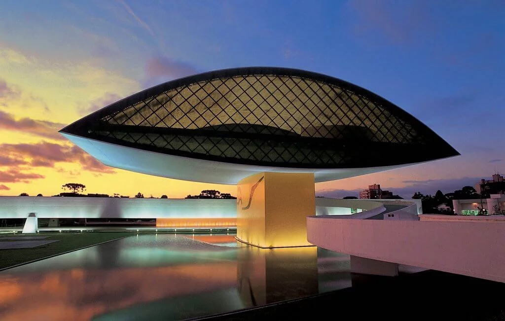
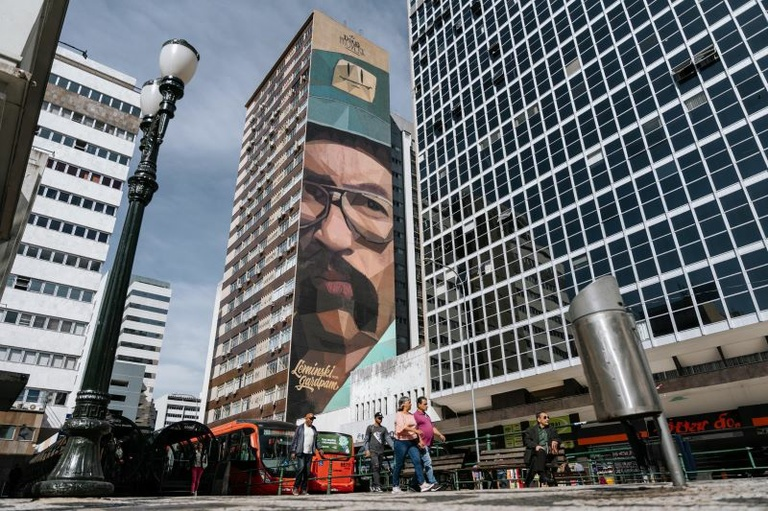
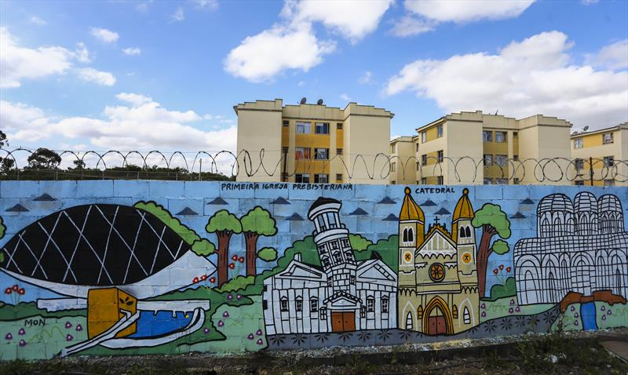

A Cidade Como Tela
O Paraná respira arte para além das molduras tradicionais. Nas últimas décadas, o estado se consolidou como um dos grandes polos de criação contemporânea do Brasil, impulsionado pela arquitetura monumental do Museu Oscar Niemeyer (MON), pela força das galerias independentes e pelas cores que cobrem as ruas. Entre a fotografia autoral e a expressividade do graffiti, a cena artística paranaense reflete uma identidade dinâmica, urbana e em constante evolução, onde o cotidiano e a experimentação se encontram a cada esquina.

Cena Urbana e Street Art
Longe das galerias tradicionais, a arte no Paraná também ganha vida a céu aberto. O graffiti e o muralismo transformaram os muros cinzas das cidades paranaenses em grandes galerias públicas, trazendo cores, críticas sociais e narrativas visuais para o dia a dia da população. Artistas e coletivos locais usam o spray e a tinta para reimaginar o espaço urbano, mostrando que a expressão artística mais viva do estado está, muitas vezes, ao alcance de qualquer transeunte a caminho do trabalho.

Identidade em Transformação
Essa profusão de cores, formas e conceitos no espaço urbano vai muito além da estética: ela redefine o que significa ser paranaense no século XXI. Ao misturar a herança cultural do estado com a linguagem global da arte de rua e da criação contemporânea, os artistas locais provocam o público a pensar sobre pertencimento, diversidade e o futuro da região. A arte deixa de ser apenas uma lembrança do passado e passa a ser o espelho vivo de uma identidade em constante construção.
